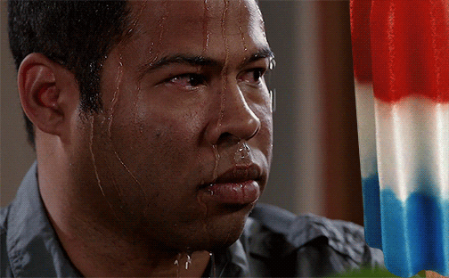

<!DOCTYPE html>
<html>
<body style="background-color:mintcream;">
<style>
img {
 display: block;
 margin-left: auto;
 margin-right: auto;
}
Video {
display:block; margin:auto;}

</style>
</head>
<body>

</body>
</html>
</head>

<h1 style="background-color:steelblue; font-family:baskerville; text-align:center; font-size: 60px">Wild Wild Wet</h1>
<p style="text-align:center; font-size:18px; font-family:baskerville">It's a hot day and you have some free time on your hands, where should you go?</p>

<p style="color:royalblue; text-align:center; font-size:22px; font-family:baskerville;">Check out <b>Singapore's #1 Waterpark!!</b></p>
<p style="text-align:center; font-size:18px; font-family:baskerville;">Rides ranging from kids friendly to extreme that everyone can enjoy!
<br>
<p style=text-align:center; font-size:18px; font-family:baskerville;><b><mark>*DISCLAIMER*</mark></b> What you are about to read about the rides are my personal opinions from my past experiences at Wild Wild Wet</p>

<video width="400" controls>
  <source src="Singapore's Wild Wild Wet.mp4" type="video/mp4">
  <source src="ingapore's Wild Wild Wet.ogg" type="video/ogg">
Your browser does not support the video tag.
</video>

<p style="text-align:center;">
Video courtesy of 
<a href="https://www.youtube.com/watch?v=-nkSqkS1wy4&list=PLzvlmNJR0GAFR-J1l900TMamhb8EZXGi5" target="_blank">Joanne Khoo</a>.
</p>

<p style="text-align:center">
</p>
<br>
<hr>
<h2 style="text-align:center; font-size: 25px; font-family: Baskerville">What You Need to Know</h2>
<p style="text-align:left; font-size: 18px; font-family:georgia;">
Prices for the day pass varies based on age and whether it is peak period or non-peak period.
For more information on the prices, <b>click
<a href="https://www.wildwildwet.com/tickets-memberships/day-pass">here</b></p>
</a>
<p style="text-align:left; font-size: 18px; font-family:georgia;">
<b>Park Operating Hours</b>: Monday to Sunday 12pm-6pm <mark>(Closed on Tuesdays)</mark></p>
<p style="text-align:left; font-size: 18px; font-family:georgia;">
<b>Address</b>: 1 Pasir Ris Cl, Downtown East, Singapore 519599</p>
<p style="color:mediumslateblue; text-align:left; font-size: 18px; font-family:georgia;">
Things you should bring along: an extra set of clothes, sunblock, towel and toiletries.
</p>
<p style="font-size:18px; font-family:georgia;"><b>Suggested attire for ladies</b>: rash guards/cotton shirt/swimming costume <i>*do make sure that the back of your shirt <mark>DOES NOT</mark> have any print designs as they can cause friction when going down the slides*</I><p/>
<p style="font-size: 18px; font-family:georgia;"><b>Suggested attired for men</b>: dri-fit shirt/singlet and swim shorts</p>

<p style="font-size: 18px; font-family:georgia;">They <I>do not</I> allow outside food and drinks so do bring some cash along with you. There are also lockers available when you enter the park to put your personal belonging. Re-entry of the park is allowed but <mark>TAKE NOTE</mark> that you need to get a re-entry stamp before leaving.</p>

<h2 style="border:3px solid palevioletred;"><b>HERE IS A NEAT TIP!!</b></h2>
<p style="font-size:18px; font-family:georgia">With the introduction of the <I>SingaporeRediscover Vouchers</I>, you can now purchase your tickets through platforms such as Klook and use your vouchers to pay for the ticket. So you are practically going for free!! Click
<a href="https://www.klook.com/activity/9610-wild-wild-wet-ticket-singapore/">here</a> to be directed to the Klook website.

<br>
<hr>
<h2 style="text-align:center; font-size: 25px; font-family:baskerville;">Park Map</h2>
<p style="text-align:center; font-size: 18px; font-family:georgia;">Here is a map of the park to help you navigate around the different rides:</p>


<br>
<hr>
<h2 style="text-align:center; font-family:baskerville;">Rides Worth Trying!!</h2>
<ol>
 <li style="font-family: courier new; font-size: 25px;">TORPEDO</li>

<p style="text-align:center; font-size: 20px; font-family:Georgia;">
This attraction is <b>NOT</b> for the FAINT-HEARTED. So how does it work? You go into a tube and a countdown starts. Once the countdown ends, the platform you are standing on releases and you experience a FREE FALL with twists and turns. It can be intimidating at first but this ride is the epitome of thrill. I do not recommend children to go on this ride.</p>

<h3 style="border:3px solid steelblue; text-align:center; font-family:georgia;">
<b>Rating: 9/10</b></h3>

 <li style="font-family:courier new; font-size: 25px;">ULAR-LAH</li>


<p style="text-align:center; font-size: 20px; font-family:Georgia;">
This is a fun ride to go on with your friends and family. I think it is suitable for people of all ages so do try it out with your whole family!! I found this ride quite relaxing with some twist and turns along the way but nothing too extreme. It is the <mark>first raft slide</mark> in Southeast Asia so do check  out this super flume ride when you visit Wild Wild Wet.</p>
<h3 style="border:3px solid steelblue; text-align:center; font-family:georgia;">
<b>Rating: 8.5/10</b></h3>

 <li style="font-family:courier new; font-size: 25px;">TSUNAMI</li>


<p style="text-align:center; font-size: 18px; font-family:Georgia;">
The tsunami attraction is one of the favourites at Wild Wild Wet. From my experience, this attraction is much more enjoyable when there are lesser people so pick a time when the crowds are not too large to enjoy it. It is a great place to chill and recharge when you get tired from the thrill of the other rides.</p>
<h3 style="border:3px solid steelblue; text-align:center; font-family:georgia;">
<b>Rating: 7/10</b></h3>


 <li style="font-family:courier new; font-size: 25px;">SLIDE UP</li>


<p style="text-align:center; font-size: 18px; font-family:georgia;">
This ride is perfect for you if you are a thrill-seeker. This ride has a four-storey high ramp and it is powered by gravity and kinetic energy. It is not as scary as the Torpedo ride mostly because you can ride it with a partner. The initial drop is the most thrilling part of the ride especially if you are the one facing backwards. I highly recommend you try this ride out with a partner.</p>
<h3 style="border:3px solid steelblue; text-align:center; font-family:georgia;">
<b>Rating: 8/10</b></h3>

 <li style="font-family:courier new; font-size: 25px;">PROFESSOR'S PLAYGROUND</li>


<p style="text-align:center; font-size:18px; font-family:georgia;">
This playground is pretty much <b>EVERY CHILD'S DREAM</b>. It is a really fun place for children to explore and have fun. A cool thing about this playground is that it has an area with a giant bucket that fills up with water, when the time is up the bucket flips and pours all the water out on you!! A lot of people camp underneath the bucket just to experience the splash.</p>
<h3 style="border:3px solid steelblue; text-align:center; font-family:georgia;">
<b>Rating: 7.5/10</b></h3>

 <li style="font-family:courier new; font-size: 25px;">KRAKEN RACERS</li>

<p style="text-align:center; font-size:18px; font-family:georgia;">
Kraken Racers is one of the <b>NEWER</b> rides in Wild Wild Wet. It is Singapore's <I>first four-lane mat racer slide</I>. This is a fun ride to go on to have some friendly competition with your friends and family. Since this is a newer ride, I can't really give a recommendation on it as I myself have not tried it but do check it out for yourself when you visit the water park!!

<li style="font-family:courier new; font-size: 25px;">Royal Flush</li>

<p style="text-align:center; font-size:18px; font-family:georgia;">
Royal Flush is one of the two <b><mark>NEWEST</mark></b> rides in Wild Wild Wet. It is the <I>first hybrid ride</I> combining the Behemoth BOWL40 and TornadoWAVE. The raft slides down the tunnel and up a near-vertical wall at crazy speeds. Once again, as I have not experienced this ride yet, it is hard for me to give my personal opinion but according to other reviews I have read, this ride seems to be fan-favourite.</p>

</body>
</html>
